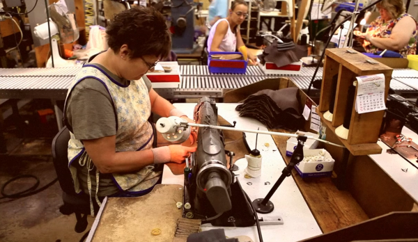
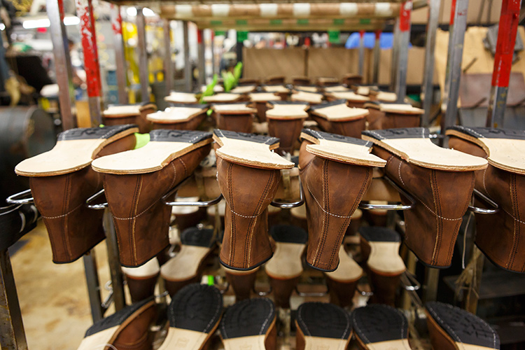
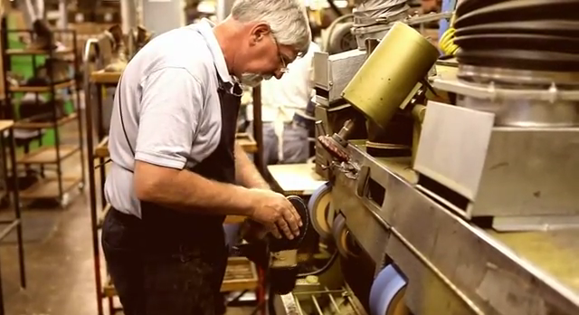
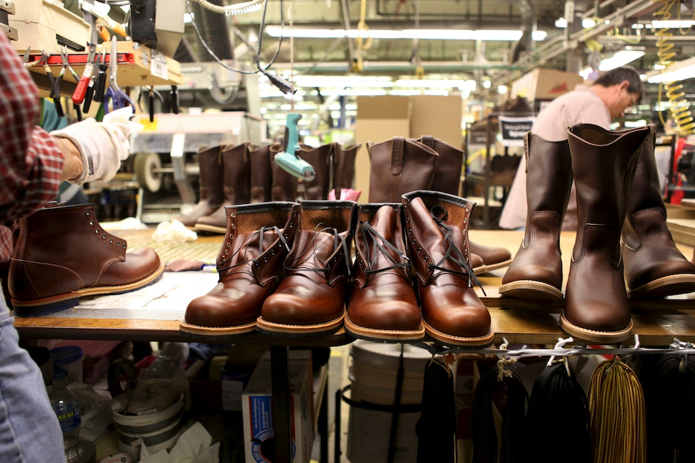

Обувная компания «Профобувь» более 7 лет успешно работает на рынке производителей рабочей и специальной обуви, а также является оптовым поставщиком профессиональной спецодежды и средств индивидуальной защиты.
Мы производим разнообразные модели обуви литьевого, гвоздевого, бортопрошивного методов крепления подошвы, а также обувь, изготовленную методом прямого прилива резины.
Выпускаемая обувь изготавливается в разных комплектациях: утепленном варианте с использованием искусственного или натурального меха, карбоновым или металлическим подноском, кивларовой или металлической стелькой, строго в соответствии с техническими условиями, что гарантирует потребителям оптимальное качество и долгое время эксплуатации с надежной защитой от механических повреждений и химических воздействий.
Ассортиментный ряд продукции представлен полуботинками, ботинками, ботинками с высокими берцами и сапогами с 35 до 48.
Собственное производство рабочей обуви позволяет выполнять заказы любой сложности в сжатые сроки с гарантией высокого качества. Все виды специальной обуви успешно прошли сертификацию, подтвердившую ее высокое качество в соответствие самым строгим гигиеническим требованиям.
Проверенная временем и отлично зарекомендовавшая себя рабочая обувь гарантирует безопасность и комфортные условия носки рабочим всех отраслей промышленности.
Создание рабочей обуви – это сложный технологический и производственный процесс, который требует современное оборудование, высококачественные используемые материалы и участие специалистов высокого класса, профессионалов своего дела.
Эти составляющие удачного бизнеса плюс высокопрофессиональный, активно работающий коллектив позволяют нашей компании быть в числе лидеров на рынке рабочей обуви.
Наше производство включает в себя следующие участки:
-
Раскройный участок
где один специальный вырубочный пресс вырезает по трафарету составные части обуви, а другой вырубочный пресс вырезает стельки для будущей обуви;
-
Разметный участок
где сначала размечаются будущие швы обуви, а потом составные детали обрабатываются специальной машиной для спускания краев, чтобы они были тонкими и пригодными для сшивания;
-
Пошивочный участок
где на пошивочном конвейере детали обуви сшиваются, и получается заготовка;
-
Сборочный участок
оснащенный современными машинами для прибивки стельки, для формирования задников, для затяжки и еще многими машинами для сборки обуви вплоть до ее полировки и вдевания шнурков, если они есть.
Для выполнения такого сложного технологического процесса по пошиву обуви требуется специализированное современное оборудование, которым оснащено наше производство.
Мы делаем акцент на изучении потребностей рынка, стремимся к внедрению передовых технологий и высокому качеству нашей продукции.
Идеальное сочетание качества продукции, гибкой ценовой политики и индивидуального подхода к каждому покупателю выдвигают нашу компанию в первые ряды производителей рабочей обуви.
С нами удобно и приятно сотрудничать!